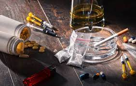

Droga é toda e qualquer substância, natural ou sintética que, uma vez introduzida no organismo, modifica suas funções.
As drogas naturais são obtidas através de determinadas plantas, de animais e de alguns minerais - a cafeína (do café), a nicotina (presente no tabaco), o ópio (na papoula) e o THC ou tetrahidrocanabinol (da Cannabis).
As drogas sintéticas são fabricadas em laboratório, exigindo para isso técnicas especiais. O termo droga, presta-se a várias interpretações, mas ao senso comum é uma substância proibida, de uso ilegal e nocivo ao indivíduo, modificando-lhe as funções, as sensações, o humor e o comportamento.
Tipos de Drogas existentes üíä
Existem várias
categorias de drogas , incluindo
estimulantes (aumentam a atividade cerebral), depressoras (diminuem a atividade cerebral), alucinógenas (alteram a percepção), dissociativas (causam desconexão da realidade), narcóticas (usadas para alívio da dor) e recreativas (utilizadas em contextos sociais e de lazer). O uso inadequado pode ter sérias consequências para a saúde física e mental.
Danos ü§Æ
O consumo de drogas lícitas e ilícitas pode causar diversos efeitos colaterais no organismo em curto ou longo prazo: mudanças no apetite e no sono, alterações na frequência cardíaca e
na pressão arterial, desenvolvimento de doenças mentais e de outras complicações, como o câncer.
saiba mais
Como parar de usar drogas ü§î
Para se livrar do uso de drogas, é essencial buscar ajuda profissional e apoio de pessoas próximas
. A abordagem varia de acordo com o tipo de droga e o grau de dependência,
mas tratamentos como terapia comportamental, grupos de apoio e reabilitação podem ser eficazes na superação do vício. A determinação, força de vontade e comprometimento com a mudança também são fundamentais para alcançar uma vida saudável e livre das drogas. Não hesite em buscar ajuda, pois o suporte adequado pode fazer toda a diferença.
Caps ADüíö
O Caps AD é um serviço especializado em saúde mental que atende pessoas com problemas decorrentes do uso prejudicial de álcool e outras drogas. Os serviços prestam atendimento a adultos e adolescentes acima de 15 anos
e são divididos em categorias. A Capital possui um Caps AD do tipo 2, seis do tipo 3 e um do tipo 4
(peça ajuda, CLIQUE AQUI )
Preven√ß√£o do uso de drogas üö´
Discutir estratégias e programas para educar a sociedade, especialmente os jovens, sobre os perigos das drogas e como evitá-las.Fazendo que cresçam com consciência e um bom futuro trilhado pelo caminho certo.
Legaliza√ß√£o de drogasüó∫Ô∏èüìç
Em resumo, a legalização das drogas é um assunto controverso e complexo, com argumentos convincentes tanto a favor quanto contra. A abordagem ideal requer análise cuidadosa dos benefícios
potenciais e dos riscos envolvidos, bem como considerações sobre a implementação de políticas de controle e regulamentação adequadas.